Meas.-XYZ Input
A linear measurement-domain representation keeps the model closer to sensor evidence than post-ISP sRGB.
Moving the visual interface for VLMs from post-ISP RGB renderings toward RAW-derived measurement evidence.
Vision-language models are almost universally trained and evaluated on post-ISP RGB images, implicitly treating rendered appearance as a sufficient interface for multimodal grounding. However, RGB rendering is a lossy observation of the underlying sensor measurement: in low-light, high-dynamic-range, and exposure-imbalanced scenes, image signal processing can clip highlights, suppress structures, quantize evidence, and discard task-critical visual signals before reasoning begins.
We formulate measurement-grounded vision-language learning and instantiate it as PRISM-VL, a framework that adapts VLMs to RAW-derived Meas.-XYZ inputs. PRISM-VL combines measurement-domain input, camera-conditioned grounding, and Exposure-Bracketed Supervision Aggregation. On a held-out benchmark, PRISM-VL-8B reaches 0.6120 BLEU, 0.4571 ROUGE-L, and 82.66% LLM-Judge accuracy, improving over the RGB Qwen3-VL-8B baseline by +0.1074 BLEU, +0.1071 ROUGE-L, and +4.46 percentage points.
PRISM-VL separates the model-facing observation, the annotation interface, and the capture context used for grounding.
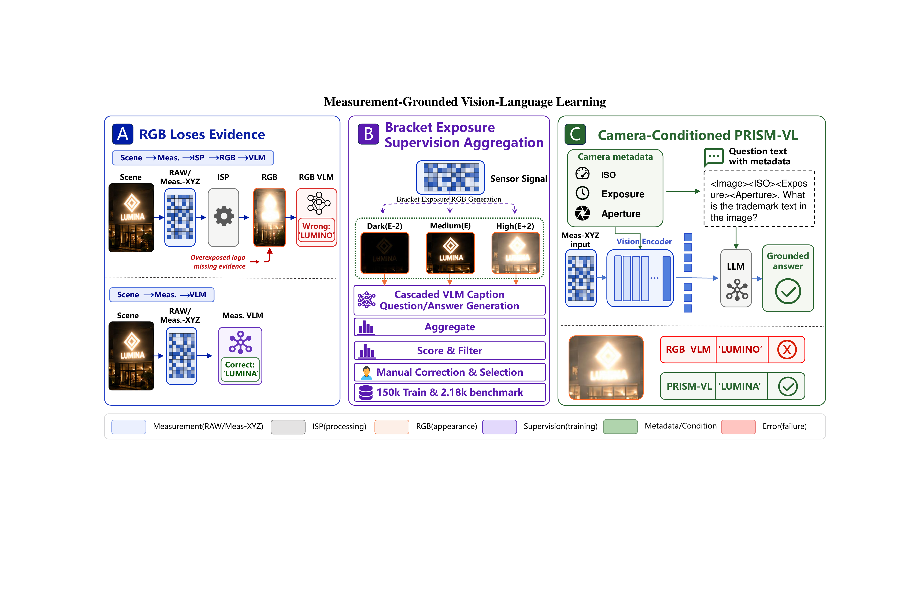
A linear measurement-domain representation keeps the model closer to sensor evidence than post-ISP sRGB.
ISO, exposure time, aperture, and related metadata condition both the question and late visual representations.
Exposure-bracketed RGB proxies generate reliable annotation signals that are attached back to the same RAW capture.
The lost-signal residual concentrates around illuminated text and other weak evidence, which means the rendered RGB image no longer preserves all cues needed for grounding.

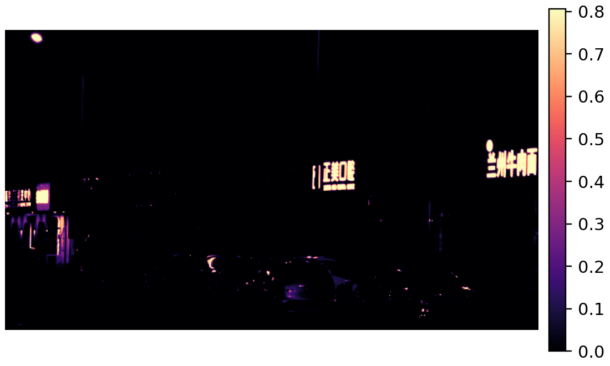
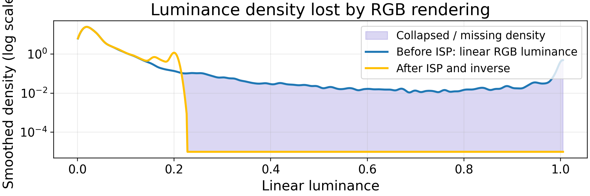

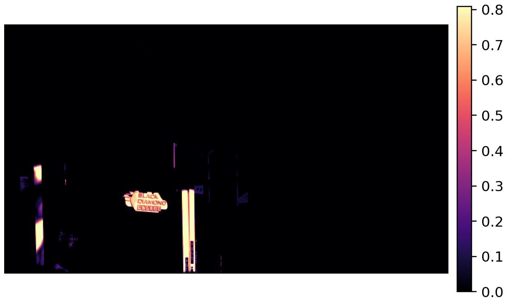
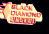
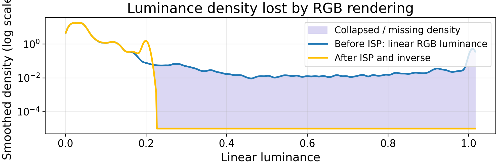
PRISM-VL improves over RGB-native baselines across BLEU, ROUGE-L, and LLM-Judge accuracy, with the largest practical gains in exposure-sensitive regimes.
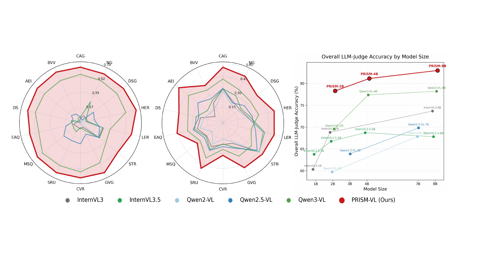
| Model | BLEU | ROUGE-L | Judge |
|---|---|---|---|
| Qwen3-VL-2B | 0.3407 | 0.3171 | 69.54% |
| Qwen3-VL-4B | 0.4442 | 0.3453 | 77.37% |
| Qwen3-VL-8B | 0.5046 | 0.3500 | 78.20% |
| PRISM-VL-2B | 0.5865 | 0.4244 | 77.99% |
| PRISM-VL-4B | 0.6021 | 0.4465 | 80.83% |
| PRISM-VL-8B | 0.6120 | 0.4571 | 82.66% |
In low-illumination text examples, the RGB baseline grounds on incorrect visible-looking text, while PRISM-VL recovers the reference answer from measurement-domain evidence.
Question: What is the name of the illuminated shop next to the Beijing Roast Duck?
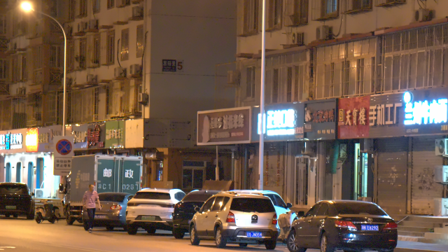
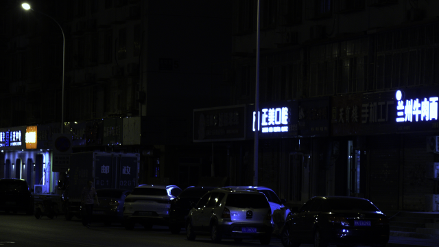
RGB Qwen3-VL: "Hua Tian Hua" - incorrect.
PRISM-VL: "Zhengmei Dental Clinic" - correct.
Question: What is the word on the first line of the yellow sign?
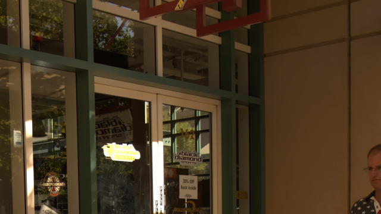
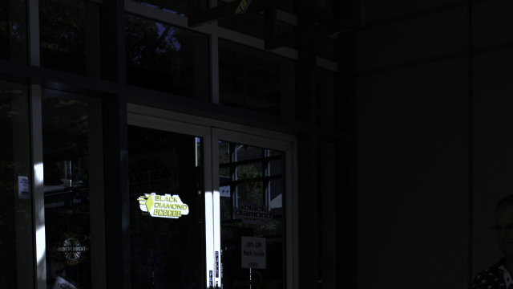
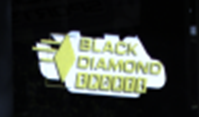
RGB Qwen3-VL: "diamond" - incorrect.
PRISM-VL: "BLACK" - correct.
@article{xu2026allegory,
title = {Allegory of the Cave: Measurement-Grounded Vision-Language Learning},
author = {Xu, Kepeng and Xu, Li and He, Gang and Yu, Wenxin},
journal = {arXiv preprint},
year = {2026}
}